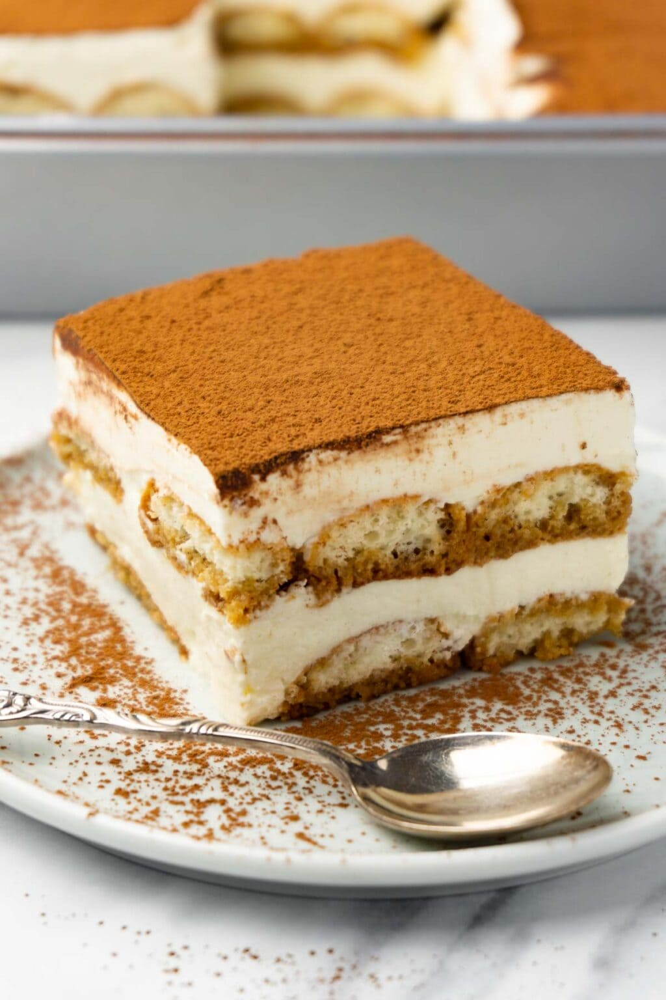

Tiramisu

Description
Tiramisu is a classic Italian dessert known for its layers of
coffee-soaked ladyfingers, creamy mascarpone filling, and a dusting of
cocoa powder. This rich and indulgent treat is the perfect ending to a
dinner party or a comforting sweet snack for any occasion.
Its unique combination of flavors and textures makes it a crowd-pleaser,
and the no-bake preparation means it's simple to make in advance.
Ingredients
- 300g ladyfinger biscuits
- 250g mascarpone cheese
- 3 large eggs (separated into yolks and whites)
- 100g granulated sugar
- 300ml strong brewed coffee (cooled)
- 2 tablespoons coffee liqueur (optional)
- Unsweetened cocoa powder (for dusting)
- Dark chocolate shavings (optional, for garnish)
Steps
-
In a bowl, whisk together egg yolks and sugar until pale and creamy.
- Fold in the mascarpone cheese until smooth and well combined.
-
In a separate bowl, beat the egg whites until stiff peaks form, then
gently fold them into the mascarpone mixture.
-
Mix the cooled coffee with the coffee liqueur (if using) in a shallow
dish.
-
Quickly dip each ladyfinger into the coffee mixture and layer them in a
rectangular dish or individual serving glasses.
- Spread a layer of the mascarpone mixture over the ladyfingers.
-
Repeat the layers until all ingredients are used, ending with the
mascarpone mixture on top.
-
Dust the top generously with cocoa powder and garnish with chocolate
shavings if desired.
-
Chill in the refrigerator for at least 4 hours (preferably overnight)
before serving.
Home